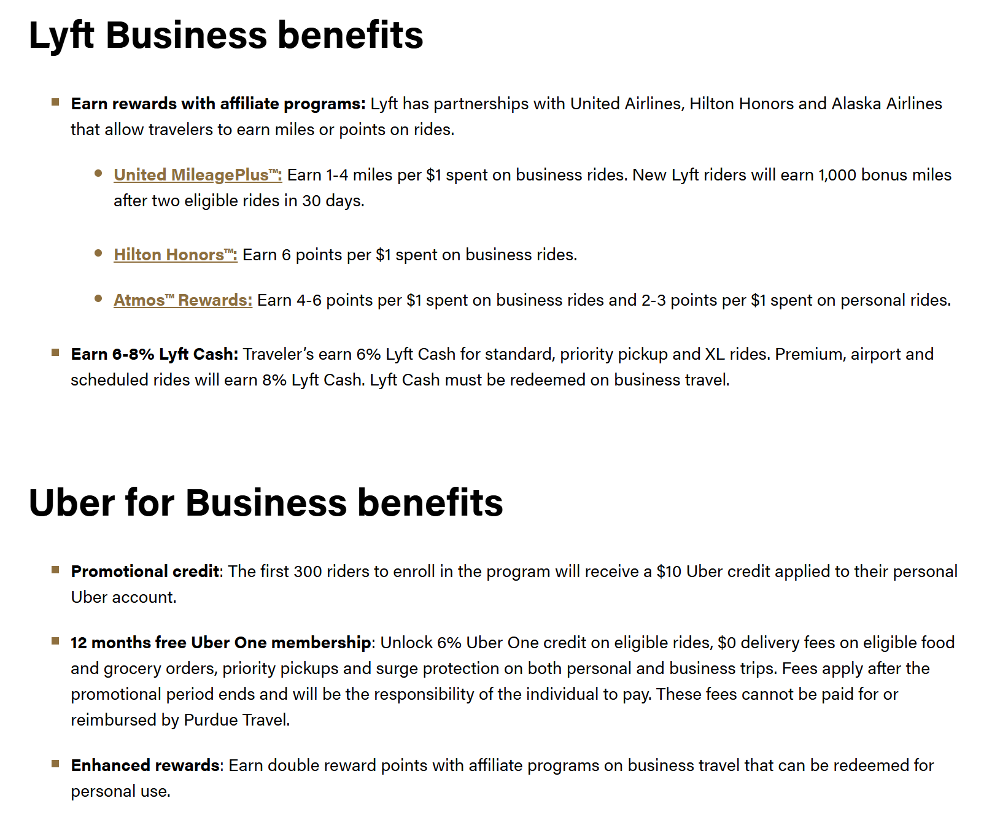
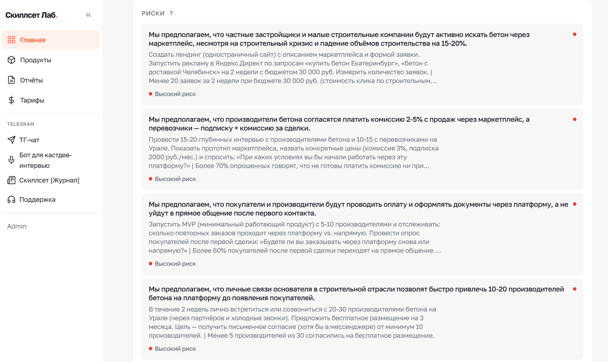

Ценностное
предложение
Как перестать делать ненужные фичи?
90% стартапов умирают.
Главная причина — продукт никому не нужен
потому что продукт не нужен
не доживают до PMF
подтверждается в среднем
Единственный способ не войти в эту статистику — научиться формулировать ценность до разработки.
Что вы унесёте с этой лекции
- Определение ценности, которое работает (не из учебника)
- Правильный уровень, на котором коммуницировать ЦП
- 9 готовых механик создания ценности
- Алгоритм: как от интервью перейти к гипотезе ЦП за час
- Способ проверить ЦП за 2 недели без кода
На чём строится лекция
- JTBD (Jobs To Be Done) — основной инструмент: ценность через работы клиента
- Каталог механик Скиллсет — 140+ механик, сгруппированных по бизнес-задачам
- RAT (Riskiest Assumption Test) — инструмент валидации гипотез
Всё, что сегодня услышите, обкатано в реальных продуктах агентства Скиллсет и в проектах клиентов.
Что такое ценность
Ценность ≠ фича
- Большинство команд думают фичами: «давайте добавим кнопку»
- Фича — это сигнал, что клиент заметил что-то ценное, но не сама ценность
- Процесс «придумать фичу → выкатить → никому не нужна» — сломан с первого шага
Люди живут не на уровне кнопок и экранов. У них есть работы, которые надо выполнить.
Что такое ценность продукта
Не «что умеет продукт». А «как меняется жизнь клиента после использования».
Ценность уникальна для каждой пары «работа + решение». Один и тот же продукт даёт разную ценность разным людям.
Как мозг оценивает ценность
- Мозг тратит ~20% энергии тела — поэтому экономит на всём
- Постоянно предсказывает, насколько эффективно будет выполнена каждая работа
- Проблема = реальность хуже ожидания
- ВАУ = реальность лучше ожидания
Ценность всегда относительна — относительно ожиданий клиента в конкретный момент.
Ожидания растут сами.
Без вашего участия
Пример: доставка еды за 30 минут в 2015 = чудо. В 2026 = «а что так долго?»
Вывод для фаундера: нельзя остановиться. Ценность надо постоянно растить.
Apple AirPods: 4 перехода — 4 механики
| Переход | Механика | Что изменилось |
|---|---|---|
| + микрофон, кнопки | Больше работ одним решением | Не нужно доставать телефон для звонка |
| Проводные → беспроводные | Убить работу | Убрана работа «распутывать наушники» |
| AirPods → Pro | Добавить сегмент | Шумоподавление для тех, кому нужна тишина |
| AirPods → Max | Удовлетворить глубинные потребности | Объект статуса и эстетики |
Одна линейка продукта — четыре разные механики создания ценности.
Core Jobs и Big Jobs
Клиент никогда не хочет «купить такси»
- У любой работы есть работа выше уровнем — реальная мотивация
- И работы ниже уровнем — реализация, которую мы берём на себя
- Ценность всегда идёт снизу вверх — от реализации к мотивации
Core Job и Big Job
| Core Job | Big Job | |
|---|---|---|
| Как выполняет продукт | Полностью | Частично |
| Граница | Потолок решения | Над потолком |
| Для пользователя | Результат продукта | Мотивация покупки |
Core Job — самая высокая работа, которую ваш продукт выполняет полностью.
Core Jobs vs Big Jobs на живых продуктах
| Продукт | Core Job | Big Job |
|---|---|---|
| Яндекс.Такси | Доехать быстро и комфортно | Сходить на свидание |
| HH.ru (для HR) | Опубликовать вакансию и получить релевантные отклики | Закрыть позицию нужным человеком, не потеряв темп команды |
| ЦИАН (арендодатели) | Разместить объявление | Сдать квартиру под ключ |
| Яндекс.Аренда | Сдать квартиру под ключ | Получать стабильный пассивный доход |
Обещай на Core.
Продавай через Big
- Core Jobs — то, что вы реально делаете. Лендинг-заголовки и демо
- Big Jobs — то, ради чего к вам приходят. Кейсы и отзывы
Ошибка инфо-цыган: обещать Big Job («станешь миллионером»), а делать микро-работу (PDF на 20 страниц). Это манипуляция.
Поднять Core Job на уровень выше
Бывшая Big Job становится новой Core Job. Продукт начинает выполнять то, что раньше было только мотивацией.
| Было | Стало | Механика |
|---|---|---|
| ЦИАН «разместить объявление» | Яндекс.Аренда «сдать под ключ» | Забрать всю цепочку работ |
| Свой интернет-магазин | Ozon для продавцов | Логистика, маркетинг, возвраты — под ключ |
| Word «набрать текст» | ChatGPT «получить готовый результат» | Выйти на работу выше, упростив граф ниже |
⚠ Если кто-то на вашем рынке уже поднялся — вы вынуждены тоже. Иначе рынок уйдёт.
Сегмент первичен
Нельзя сделать «хорошо для всех»
- Ресурсы команды и продукта — всегда конечны
- Если размазать на всех — ВАУ не будет ни для кого
- Первый критерий сегментации — похожесть графов работ, не демография
Фокусировка — это отказ инвестировать в нецелевые сегменты ради ВАУ для целевых.
Пол, возраст, доход — плохие критерии
- Они ничего не говорят о том, какую ценность создавать
- Бухгалтер 25 лет и бухгалтер 45 лет — один сегмент (одни Core Jobs)
- Бухгалтер и финдиректор — разные сегменты (разные Core Jobs)
- Демография полезна только как второй критерий
Сегментация должна отвечать на вопрос: «Для каких работ нас нанимают?», а не «Кому мы продаём?»
выбрал судьбу компании»
Работа сегмента определяет:
- Как вы конкурируете — с кем и за что
- Как привлекаете — какие каналы и обещания работают
- Какие метрики активации — что считать «клиент на месте»
- Как растите ценность — какие механики применимы
Меняете работу — меняется всё. Это стратегическое решение.
Ozon для продавцов
| Core Job | Big Job | |
|---|---|---|
| Свой интернет-магазин (раньше) | Выложить товар и получить заказ | Построить прибыльный товарный бизнес |
| Ozon для продавцов (сейчас) | Продать под ключ — логистика, возвраты, маркетинг | Тот же — прибыльный товарный бизнес |
Ozon взял бывший Big Job продавца и сделал его своим Core Job. Это — поднятие уровня из прошлого слайда, применённое к B2B-сегменту.
9 базовых механик
создания ценности
Не чеклист, а меню
- В каталоге Скиллсет — 140+ механик, сгруппированных по бизнес-задачам
- Сегодня — 9 базовых. Без них продукт не работает
- Это не «применить все». Это меню: берёте те, что подходят вашему сегменту
- Одна механика может решать несколько задач сразу
Алгоритм работы: знаете граф работ сегмента → проходите по меню → отмечаете применимые → ранжируете по эффекту → проверяете через RAT.
Выполнить работу на уровне
ожидаемых критериев успеха
- Базовое качество — порог, ниже которого клиент уходит
- Если не выполняете базовый уровень — остальные 8 механик бесполезны
Пример: доставка еды — еда должна приезжать горячей. Всё. Без этого никакие «бонусы», «программа лояльности» и «красивый дизайн приложения» не помогут.
Убить работу
Убрать шаги, которые клиент раньше был вынужден делать.
- AirPods убили работу «распутать провода»
- Tilda / Wix убили работу «настроить хостинг» — для пользователей конструкторов этой сущности вообще больше не существует
Самая элегантная механика: заметна не тем, что вы добавили, а тем, что вы забрали.
Выполнять больше работ одним решением
Один продукт закрывает несколько Core Jobs клиента сразу.
- Figma — дизайн + прототип + передача разработчикам + комментарии заказчика в одном месте
- Супер-аппы: Т-Банк, Яндекс — банковское, страховое, инвестиции, доставка, такси в одном приложении
Риск: если ни одну работу не делаете лучше специализированных — превращаетесь в «универсал, который всё умеет посредственно».
Починить проблемы
Работа уже выполняется, но плохо. Ищите, где в критической цепочке клиента ломается.
- Банки СНГ после санкций: работа «делать международные переводы» сломалась для миллионов людей
- Починил первый — получил миллионный рынок без маркетинга
Срабатывает мгновенно и масштабно: клиенты уже ищут решение, им не нужно ничего объяснять.
Избавить от негативных эмоций →
привести к позитивным
Работа может быть выполнена, но эмоционально неприятно.
- Личный кабинет ФНС убрал ужас очередей и бумажек при налоговой отчётности
- Duolingo превратил стыд «я не знаю языка» в удовольствие от игры
Часто самый недооценённый вектор: «технически всё работало и раньше», но использовать было больно.
Снизить Job/Solution Cost
Суммарные затраты клиента на получение ценности: время + деньги + энергия + когнитивная нагрузка. Не путать со «снизить цену».
- Stripe: было — 2 недели интеграции с банками, договоры, PCI-DSS. Стало — 10 строк кода и 5 минут
Часто самое выгодное: вы не меняете сам продукт, но убираете барьеры на пути к нему.
Уменьшить временные гэпы
между работами
Работы в цепочке разделены промежутками. Убираем промежуток — клиент быстрее приходит к Big Job.
- Самокат / Яндекс.Лавка: доставка продуктов за 15 минут. Гэп «собраться → дойти до магазина → выбрать → вернуться» сжат до нуля
- Uber: убрал гэп «ловить машину на улице» — заказ через приложение за 30 секунд
Выйти на высокоуровневую работу,
упростив граф ниже
Клиент делал 10 шагов — теперь делает 1. Всё остальное берёт на себя продукт.
- ChatGPT: раньше цепочка «гуглить → читать → писать → редактировать → форматировать». Сейчас — один запрос
Обычно — это тот же кейс, что стратегия поднятия Core Job из блока 3. Связь не случайна: это одна и та же идея с двух сторон.
Выйти на высокоуровневую работу
без упрощения графа
Взять на себя всю цепочку как сервис. Не упростить, а забрать.
- Яндекс.Аренда: не упростили процесс сдачи квартиры, а забрали его целиком. Фотографирование, показы, договор, приём оплаты — всё делает платформа
Дороже масштабировать (нужны люди и процессы), но быстрее даёт клиенту ВАУ — потому что он вообще перестаёт думать о работе.
B2B-специфика
Всё выше — ядро.
В B2B есть 4 отличия
JTBD универсален. Core/Big Jobs, 9 механик, принцип «обещай на core, продавай через big» — работают одинаково и для B2C, и для B2B.
- ЦП в B2B — двухэтажное: для компании и для ЛПР лично
- Личные мотивации ЛПР — не бонус, а главное
- Проблема — сила, которая проталкивает сложную сделку
- У сделки не один клиент, а 6 ролей
ЦП в B2B — двухэтажное
В B2C: один человек = один набор работ = одно ЦП.
В B2B: компания покупает, но решает конкретный человек со своими личными работами.
| Кто ЛПР | Бизнес-мотивации | Личные мотивации |
|---|---|---|
| Гендиректор / активный фаундер | 50% | 50% |
| ЛПР далёк от основателя | 10–20% | 80–90% |
Метафора: KPI — это река, по которой сотрудник не может не двигаться. Но по этой реке плывёт лодочка личных целей, и ЛПР гребёт изо всех сил, чтобы выполнить именно их.
5 личных мотиваций ЛПР
| Мотивация | Что обещать в ЦП |
|---|---|
| Меня не уволят страх увольнения | «Решение безопасное. KPI выполним без проблем. Не придётся оправдываться» |
| Буду с элитой статус | «Лучшие компании отрасли покупают у нас» |
| Позиция вырастет карьерные очки | «Через 2 месяца сможешь показать, какой результат принёс компании» |
| Не хочу рутину интерес | «Снимаем с тебя A, B, C. Получишь результат, которым можно гордиться» |
| Не останусь без поддержки безопасность | «Будем рядом после внедрения. Не придётся краснеть» |
Проблема — это сила,
проталкивающая сделку
В B2C ЦП может работать без острой проблемы (новый опыт, статус, эмоция).
В B2B сделка дорогая и сложная → нужна энергия, чтобы её протолкнуть через сопротивление.
Вывод: ваша механика создания ценности должна явно чинить конкретную острую боль. «Новый классный опыт» в B2B не продаётся.
Кто на самом деле участвует в B2B-покупке
| Бизнес-заказчик | Инициирует сделку. Получает конкретный бизнес-результат |
| ЛПР | Самый дорогой человек в комнате. Последнее слово за ним |
| Держатель бюджета | Обычно финдиректор. Финансовый стоп-кран |
| ЛВР (влияющие) | Могут заблокировать: IT-директор, безопасник, юрист |
| Чемпионы | Проталкивают вас изнутри. Их личные работы совпали с вашим ЦП |
| Саботажники | Блокируют. Часто — ЛПР прошлого внедрения, чьё решение вы замещаете |
Ваше ЦП должно знать работы каждой роли. И быть достаточно сильным для чемпиона, чтобы он захотел вас проталкивать.
Amazon Business: «Buy smarter. Dream bigger.»
Было: «купи канцтовары и офисную мебель быстрее и дешевле» — чистая B2B-функция
Стало: «помоги своему бизнесу достичь мечты» — обращение к личной мотивации владельца
Результат запуска:
- 3,5 млрд показов
- 781 млн видео-просмотров
- +590 bps к намерению купить
Источник: BSSP agency · Amazon Business · Ad Age
Lyft и Uber для бизнеса:
корпоративные поездки → личные мили

Механика:
- Lyft × United: 1–4 мили за каждый $1 на бизнес-поездках
- Lyft × Hilton: 6 баллов за $1
- Uber One: 6 % кэшбэк в личный аккаунт
Компания платит за поездку. Плюшки падают лично сотруднику.
52 % бизнес-путешественников называют такие «off-the-clock» плюшки ключевым фактором выбора сервиса.
Ровно та же механика — в Яндекс Go для бизнеса: 10 % баллами на Плюс за корпоративные поездки. Источник: Uber Newsroom 2025 · Purdue Operations
Личное победило профессиональное
dentsu B2B Superpowers Index 2024 — 3 528 B2B-покупателей в 4 индустриях глобально. Впервые личные мотивации обогнали профессиональные в B2B-решениях о покупке.
| Драйвер | 2021 | 2022 | 2023 | 2024 |
|---|---|---|---|---|
| Профессиональные | 65% | 61% | 59% | 48% ↓ |
| Личные | 35% | 39% | 41% | 52% ↑ |
Топ-3 драйвера B2B-решений — все про доверие: «безопасно подписать контракт», «хороший работодатель», «мыслитель в индустрии».
Классика: CEB / Google — если ЛПР видит личную выгоду, он в 8 раз чаще выбирает дорогой продукт. Эти данные с 2012 года только подтверждаются.
Как сформулировать
гипотезу ЦП
Шаблон гипотезы ценностного предложения
я хочу [ожидаемый результат работы]
чтобы [результат Big Job + эмоциональное состояние]
Три части — три слоя JTBD: контекст (когда), Core Job (хочу), Big Job + эмоция (чтобы).
Плохо vs хорошо
✗ Плохо:
«Фаундер хочет удобный инструмент для валидации идей»
Это не формулировка, это описание фичи. Нет контекста, нет Big Job, нет эмоции.
✓ Хорошо:
Напишите свою гипотезу ЦП в чат
5 элементов, которые должны быть в формулировке:
- Сегмент — по Core + Big Jobs (не по демографии)
- Работа, которую делаем значимо лучше альтернатив
- Механика создания ценности (из каталога блока 5)
- Обещание на уровне Big Job
- Доставка на уровне Core Job
👉 Сейчас возьмите свой продукт или идею и напишите гипотезу ЦП прямо в чат трансляции. Я зачитаю несколько и разберу вживую.
RAT
проверка ЦП до разработки
Строить до проверки
- Любая гипотеза ЦП — это набор допущений
- Каждое может оказаться ложным
- Наиболее вероятный исход запуска — провал. Поэтому фокус не «как запустить», а «как максимально быстро убить гипотезу, если она нежизнеспособна»
Формула приоритизации
- Находите допущение с максимальным Risk Score — проверяете первым
- Идея: рискованное и дешёвое идёт первым. Не «дорогое и страшное»
- Проверяете одно допущение, не весь продукт сразу
Форматы RAT-эксперимента
- 15–20 глубинных интервью — самое частое и дешёвое
- Лендинг с формой предзаказа — проверяет готовность платить
- «Волшебник из страны Оз» — ручная имитация продукта
- A/B-тест рекламы с разными обещаниями ЦП
- Бумажный или Figma-прототип — для UX-гипотез
Один RAT-эксперимент занимает от нескольких часов до пары недель. И часто обходится без разработки.
Плохо vs хорошо
✗ Плохо:
«В Сыктывкаре будут заказывать дорогую пиццу с доставкой»
Нет конкретики, нет метрики, нет способа сказать «подтверждено» или «нет». Можно спорить бесконечно.
✓ Хорошо:
Конкретная аудитория · измеримый порог · чёткий критерий успеха · временные рамки · условия.
Скиллсет Лаб: RAT-анализ за вас

Что делает:
- Собирает ваш контекст
- Вычленяет рискованные допущения
- Оценивает по Risk Score
- Даёт план проверки: бюджет, метрики, каналы, сроки
На скрине — реальный проект строительного маркетплейса
Открытый бета-тест · бесплатно для участников акселератора ВШЭ по промокоду AKSELHSE
Додо Пицца — Сыктывкар, 2011
Фёдор Овчинников запускал пиццерию в городе 230 тыс. жителей. Три рискованных предположения, которые проверял до полноценного запуска сети:
- Клиенты малого города готовы заказывать дорогую (для региона) пиццу с доставкой
- Модель франшизы масштабируется при жёсткой стандартизации качества
- Гарантия «доставка за 60 минут или бесплатно» выдержит рост заказов без обрушения юнит-экономики
Сегодня Додо — одна из крупнейших пицца-сетей мира. Но каждое из этих допущений могло убить проект. Их проверяли явно, по одному.
5 мыслей, которые стоит унести
- Ценность ≠ фича. Ценность = эффективность выполнения работ клиента
- У работ есть уровни. Core Jobs — что делаете. Big Jobs — почему к вам приходят
- Сегмент определяет всё. «Выбрал работу — выбрал судьбу»
- 9 механик — это меню, не чеклист. В B2B добавляется второй этаж — личные работы ЛПР
- ЦП = гипотеза. RAT проверяет её до MVP, за недели, а не месяцы
Вопросы?
Следующие встречи
21 апреля — Этапы создания MVP основная лекция
опционально
18 апреля — продуктовый вайб-кодинг: архитектура и процессы
25 апреля — воркшоп по вайб-кодингу: PRD, лендинг/прототип (инструменты ~$100, самостоятельно)
Домашка: выпишите 5–7 допущений своей идеи, отранжируйте по Risk Score, спроектируйте 1 эксперимент. Попробуйте lab.skillset.design — он соберёт допущения за вас.